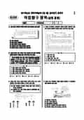

문제지


시험지를 먼저 풀어 보세요. 등급컷·표준점수·난이도는 흐리게 가려 뒀어요.
정답 변경 없음
이의신청 2문항 · 평가원 상세 답변 2문항
평가원 답변
본 문항은 국제수지를 구성하고 있는 경상수지와 자본수지의 이해 및 자본수지를 구성하는 항모으목인 투자수지와 기타 자본 수지를 이해하는 지를 평가하는 문항입니다. 제시문의 그래프를 보면,<보기> 선택지 ㄱ은 쇼시점에서 경상수지는 30억 달러의 적자를 나타내고 있고, 자본수지는 8억달러의 흑자를 나타내고 있으므로 국제수지는 5억 달러 적자입니다. 마라서 보기 선택지 ㄱ은 오선택지가 됩니다. 그리고 자본수지의 구성 항목의 하나인 기타 자본 수지는 특허권ㆍ저작권 ㆍ상표권 매매를 통하여 해당하는 자산을 취득할 경우의 수입과 지출을 의미합니다. (시점에서 기타자본 수지는 적자이므로 <보기> 선택지 ㄷ은 정선택지가 됩니다. 일반적으로 경상수지의 구성항목인 서비스 수지는 운수, 여행, 통신 보현, 특허권, 저작권 등의 제공 및 사용에 관련되는 수지이고, 특허권 등의 자산 취득과 처분에 관련된 수지는 기타 자본수지입니다.(한국은행, 「알기 쉬운경기지표 해설」,2008. 한국경제교육학회, 「고등학교 경제」 , 2007) 따라서 정답은 <보기> 선택지 'ㄴ, ㄷ:으로 구성된 @번이 되며, 본 문항의 정답에는 이상이 없습니다.직업탐구 영역 : 유형(과목) : 상업 경제
스캔 원문을 글자로 옮긴 것이라 오탈자가 있을 수 있어요.
이의 요지
2011학년도 대학수학능력시험 9월 모의 평가( 직업탐구 영역, 유 형(과 목): 회계 원리 )문제 및 정답 이의 신청 관련 답변 자료
평가원 답변
본 문항은 1, 관세 동맹, 공동 시장 등의 경제 통합 형태를 이해하는 능력을 평가하는 문항입니다. 현재 우리나라의 외교통상부에서 규정하고 있는 공식적인 문건에서 관세 동맹은 아래 그림에서와 같이 자유무역협정(1'ㅅ)의 특징인 '역내관세 철폐'를 포함하고 있습니다.(0100://\\\.112.80.10/106\/1[231062/1[23.880, 2010년 9월 7일)역내샘산요소 역내공동경제정책 조국가적기구면대과세 떠규 | 며위공동관|브고[마타 14 등)[베네룩스 관세동맹)11 그도 | 자대미 "고 = 추 |침탠애 086, 대, 41600 등(마스트리히트조약 발효이후의더!)즉, 관세동맹은 자유무역협정에서 추구하는 '역내관세 철폐'라는 특징을 포함하면서 동시에 '역외공동관세부과'라는 특징도 가지고 있습니다. 또한 독일관세동맹, 러-벨라루스-카자흐스탄 3개국관세동맹, 베네룩스 관세동맹, 51-터키 관세동맹 등에 관한 문서나 신문 기사를 찾아보면, 관세동의 내용에 61스가 포함되어 있음을 할 수 있습니다, 따라서 우리나라와 8국 간 '고율의 관세'에서 '관세 면제'로 변화될 수 있는 조건에는 자유무역협정과 관세동맹 모두 해당되기 때문에 본항에는 오류가 없습니다.2011학년도 대학수학능력시험 9월 모의 평가( 직업탐구 영역, 유 형(과 목): 회계 원리 )문제 및 정답 이의 신청 관련 답변 자료
스캔 원문을 글자로 옮긴 것이라 오탈자가 있을 수 있어요.
발행 기관: 한국교육과정평가원(KICE). 파일 위치: 이 사이트가 보관한 사본. 저작권은 발행 기관에 있습니다. 원본과 다르거나 게시 중단이 필요하면 연락처로 알려 주세요. 등급컷 출처 구분은 데이터 원칙에서 설명합니다.